Sorfina's Bookstore is a responsive web application designed as a digital storefront for a boutique book retailer.
The project focuses on creating an inviting, user-friendly interface that allows customers to browse popular titles across various genres through a modern, grid-based catalog.
Key Features
Dynamic Responsive Grid:
Uses Bootstrap’s flexbox-based grid system to ensure book cards display perfectly on both mobile and desktop.
Custom Branding: A unique visual identity using cursive typography and a warm, "bookshelf-inspired" color palette Earth tones/Brown. An unique header featuring a "bookshelf-inspired" color palette and cursive typography (Brush Script MT)
Navigation and Discovery: A Bootstrap-powered navbar that includes a search bar, brand logo and a categorised dropdown menu for book genres
Genre Filtering: Navigation links prepared for various categories including Action, Fiction, Non-fiction, Fantasy and Mystery.
Homepage
— A dynamic product catalog that showcases a curated selection of books using a responsive grid layout.
Each book is presented within a Bootstrap card component, which includes high-quality cover art, the book title and a direct link to a detailed product page.
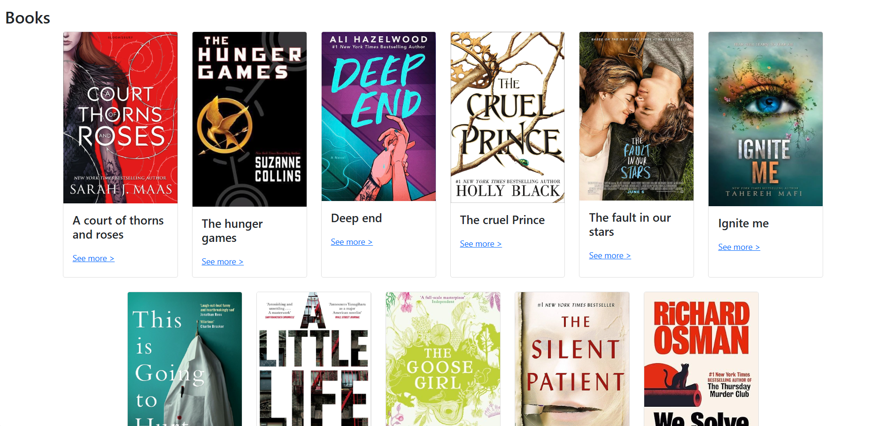
Genre Filtering
— Allows users to quickly narrow down the book collection by selecting a specific genre from the dropdown navigation bar.
This helps users discover books that match their interests more easily, creating a smoother and more personalized browsing experience without having to scroll through the entire catalogue.
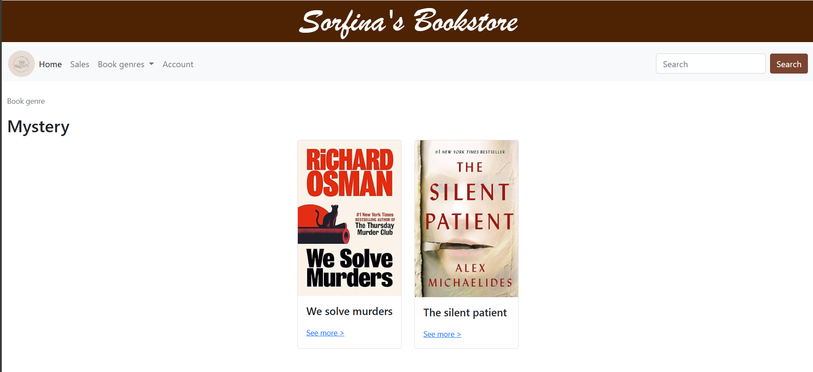
Details page
— It provides users with comprehensive information about a selected book, including its title, author, published date and synopsis.
This page helps users better understand the book before making a decision, ensuring a clearer and more informed browsing experience.
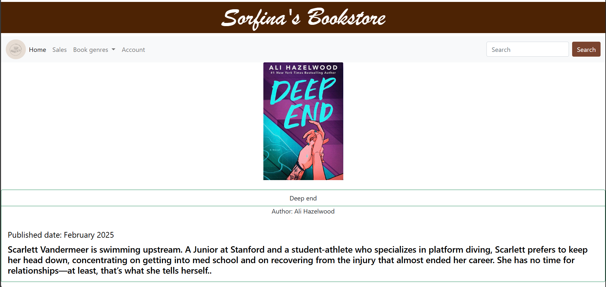
Sorfina's Interests
Software Application Development
Project Overview
Sorfina’s Interest is a personal, arts-inspired web application designed to showcase my creative hobbies through an expressive and interactive digital space. The website is centered around three key interests—Reading, D.I.Y Crochet and Baking—each represented with its own vibrant visuals, color palette and styled layout to create a playful yet organized user experience.
This project functions as a creative journal, allowing users to view, add, edit and delete entries related to books read, crochet projects completed and baked recipes. By integrating CRUD functionality, the website goes beyond static content and becomes a living archive that grows alongside personal interests.
From a design perspective, I focused on creating a lively, artsy aesthetic that reflects my personality. Decorative elements such as flower illustrations, book covers and dessert imagery were intentionally used to enhance visual storytelling and emotional engagement. Bright colors and customized styling help differentiate each interest while maintaining overall consistency across the site.
Key Features
CRUD Functionality (Create, Read, Update, Delete):
Users can add, view, edit and delete entries for books, crochet projects and baking recipes. This transforms the website from a static display into an interactive personal journal.
Interest-Based Content Sections:
The website is organized into three distinct categories—Reading, D.I.Y Crochet and Baking—each with its own layout, visuals and theme, improving clarity and user navigation.
Dynamic Content Rendering:
Content updates automatically without hard-coding, allowing entries to change in real time based on user interactions.
Custom Visual Styling:
Bright colors, images and decorative elements such as flowers, book covers and dessert visuals are used to reinforce the artsy concept and reflect personal identity.
Homepage — It showcases the hobbies I enjoy most → reading, crochet and baking.
Each representing a creative outlet and a meaningful part of my everyday life.
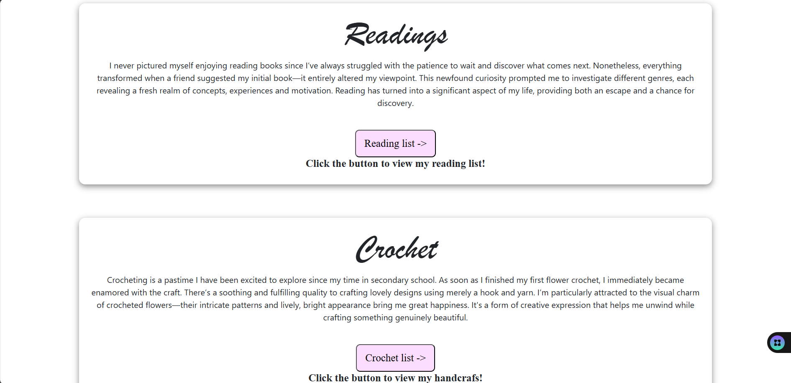
Reading List —
A visual record of my reading journey, where I keep track of completed books and ongoing reads, with the flexibility to update my progress anytime.
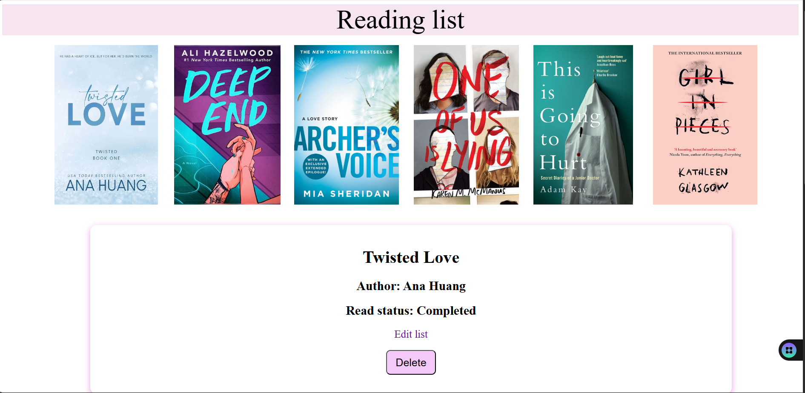
Editing and Adding page — Edit your reading progress by selecting whether the book is completed or still in progress.
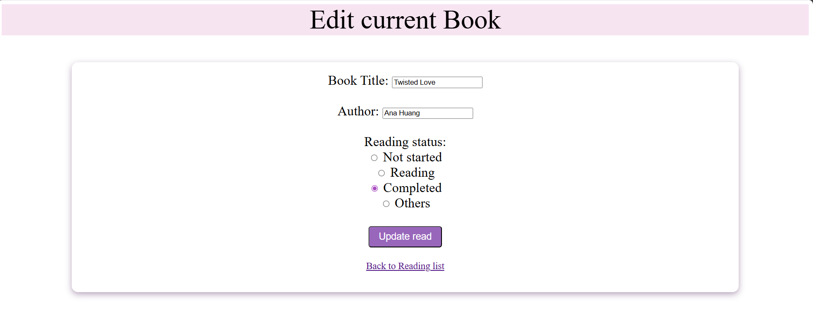
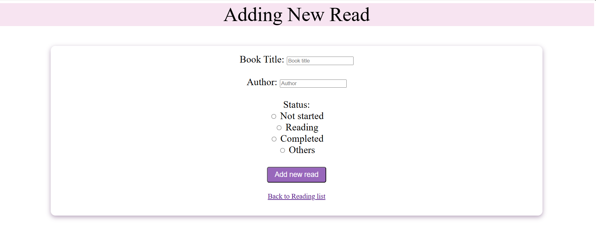
Prompt message — A confirmation prompt appears before deletion to ensure the user intends to permanently remove the selected book.
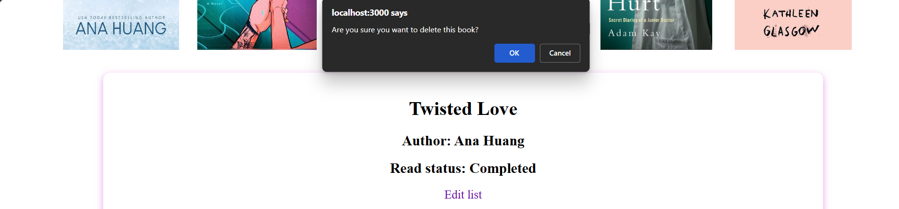
Crochet List — A visual collection of my crochet creations, highlighting the tools needed, inspiration sources and progress of each handmade piece.
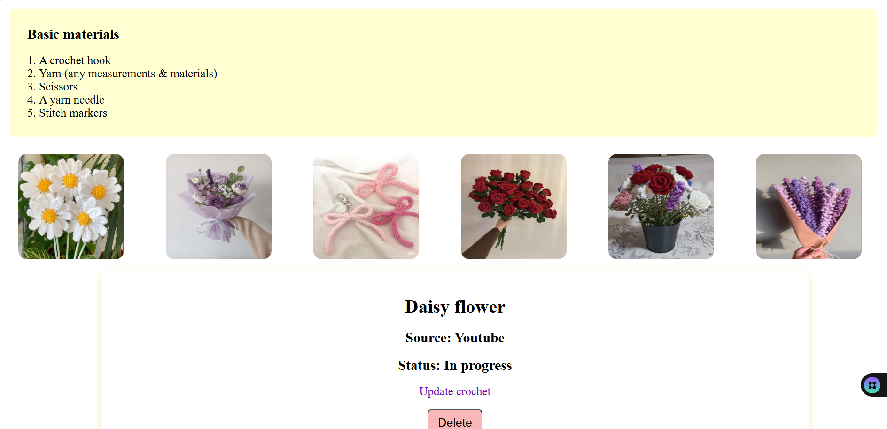
Editing and Adding page — Similar concept as the 'Reading List' editing and adding page.
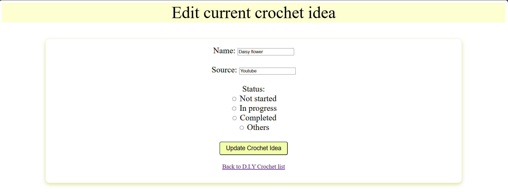
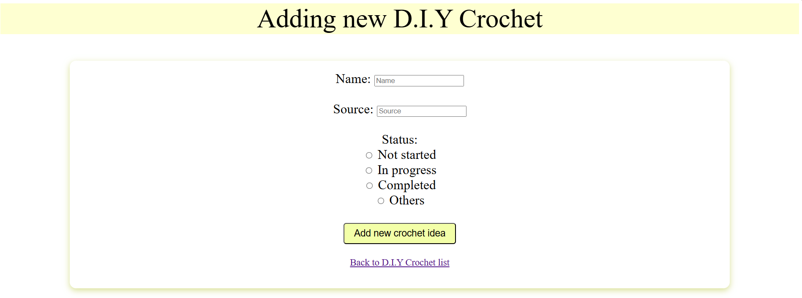
Baking List — A curated collection of my baking creations, where each dish is shared with its recipe and the inspiration source behind it.